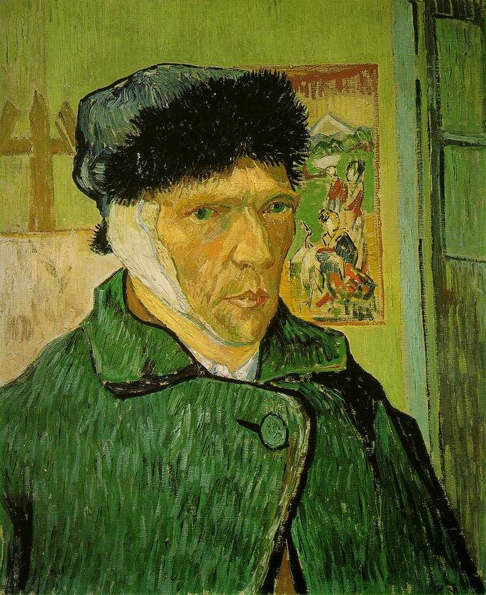

Inicio de Vida
Vincent Willem van Gogh nasceu no dia 30 de março de 1853, em Zundert, na província predominantemente católica de Brabante do Norte, no sul dos Países Baixos. Era o filho mais velho sobrevivente de Anna Cornelia Carbentus e de Theodorus van Gogh, um pastor da Igreja Reformada Neerlandesa. Van Gogh recebeu o seu nome em homenagem ao seu avô e a um irmão natimorto que nascera exatamente um ano antes. Vincent era um nome comum na família Van Gogh. O seu avô, Vincent, teve seis filhos, três dos quais se tornaram comerciantes de arte. Este Vincent também pode ter recebido o seu nome em homenagem ao seu tio-avô que tinha sido escultor.
Van Gogh era uma criança séria e pensativa. Tendo sido educado em casa pela sua mãe e pela governanta, em 1860, foi enviado para uma escola na localidade e, quatro anos depois, foi colocado num internato em Zevenbergen, local onde se sentiu abandonado, razão pela qual tudo fez para voltar para casa. Mas, em vez disso, os seus pais mandaram-no para uma escola secundária de Tilburgo, onde foi extremamente infeliz. O seu interesse pela arte começou bem cedo, tendo sido encorajado a desenhar pela sua mãe ainda em criança. Constantijn C. Huysmans, que fora um artista bem-sucedido em Paris, dava aulas de desenho aos estudantes em Tilburg. Sua filosofia era rejeitar a técnica em favor da captura das impressões das coisas, particularmente a natureza e os objetos comuns. A profunda infelicidade de Van Gogh parece ter ofuscado as aulas que frequentou, já que, aparentemente, tiveram poucos efeitos, tendo regressado a casa repentinamente em março de 1868. Van Gogh mais tarde escreveu que sua juventude foi "austera, fria e estéril".
Em julho de 1869, o seu tio Cent arranjou um trabalho a Van Gogh como comerciante de arte na empresa Goupil & Cia., na Haia. Depois de ter completado a sua formação em 1873, foi transferido para a filial da empresa em Londres, passando a morar no nº 87 da Rua Hackford em Stockwell. Este foi um período feliz para Van Gogh: era bem sucedido no trabalho e aos vinte anos de idade ganhava mais do que o seu pai. Johanna van Gogh-Bonger, a esposa de Theo, posteriormente afirmou que este foi o melhor período da vida do seu cunhado. Entretanto, Van Gogh apaixonou-se por Eugénie Loyer, a filha da sua senhoria. Porém, foi rejeitado depois de confessar seus sentimentos, uma vez que, Loyer estava secretamente noiva de um ex-inquilino. Van Gogh acabou por se isolar cada vez mais, junto com um aumento do seu fervor religioso. O seu pai e o seu tio conseguiram fazer com que fosse transferido para Paris em 1875, mas durante esta fase, Van Gogh sentia-se ressentido com a forma como a sua firma mercantilizava a arte, acabando por ser demitido um ano depois.
Em abril de 1881, ele retornou a Etten para uma alongada estadia com seus pais.[50] Lá continuou a desenhar, frequentemente usando seus vizinhos como temas. Sua prima recentemente viúva Cornelia Vos-Stricker (apelidada de Kee), filha de sua tia materna Willemina com Johannes Stricker, chegou para uma visita em agosto. Van Gogh ficou animado e fazia longas caminhadas com ela. Kee era sete anos mais velha e tinha um filho de oito anos de idade. Ele surpreendeu todos ao declarar seu amor e pedi-la em casamento. Ela recusou dizendo "Não, nunca, jamais". Kee voltou para Amsterdã e Van Gogh foi para Haia tentar vender suas pinturas e se encontrar com seu primo de segundo grau Anton Mauve. Este era o artista bem-sucedido que Van Gogh desejava ser. Mauve o convidou para voltar em alguns meses e sugeriu que ele passasse esse meio tempo trabalhando com carvão e pasteis; Van Gogh voltou para Etten e seguiu esse conselho. Escreveu 16 cartas a Theo em que fala do Curso de Desenho de Charles Bargue (Cours de Dessin), e inclusive atribui a este curso a sua nova capacidade de desenhar o que não conseguia antes.
Em setembro de 1883, Van Gogh mudou-se para a província de Drente no norte dos Países Baixos. Depois, foi para Nuenen em Brabante do Norte no mês de dezembro a fim de morar com seus pais porque estava se sentindo solitário.
Em 1885, Van Gogh pintou várias naturezas-mortas. Ele completou diversos desenhos e aquarelas durante sua estadia de dois anos em Nuenen, além de quase duzentas pinturas. Sua paleta de cores consistia principalmente de tons terrosos sombrios, especialmente marrom escuro, mostrando nenhum indício das cores vívidas que distinguem seus trabalhos posteriores.
Houve o interesse de um comerciante de Paris no início de 1885. Theo perguntou ao irmão se ele tinha pinturas prontas para serem exibidas. Van Gogh respondeu em maio com seu primeiro grande trabalho, Os Comedores de Batata, e uma série de "estudos de personagens camponeses" que eram a culminação de vários anos de trabalho. Ele depois reclamou que Theo não estava se esforçando o bastante para vender suas pinturas em Paris, com o irmão respondendo que as pinturas eram muito sombrias e não se encaixavam com o estilo vivo do impressionismo. Seu trabalho foi exposto pela primeira vez em agosto nas vitrines do comerciante de arte Leurs em Haia. Uma de suas jovens modelos camponesas engravidou em setembro de 1885 e Van Gogh foi acusado de ter dado em cima dela, com o padre do vilarejo proibindo seus paroquianos de posarem para ele.
Arles
.jpg)
Em fevereiro de 1888, Van Gogh procurou um refúgio em Arles por estar doente devido à bebedeiras e tosse de cigarro. Ele aparentemente mudou-se com a intenção de fundar uma colônia de artistas. O pintor dinamarquês Christian Mourier-Petersen tornou-se seu companheiro por dois meses e inicialmente a cidade lhe parecia exótica. Ele descreveu o local em uma carta como um país estrangeiro: "Os zuavos, os bordéis, a adorável pequena Arlesiana indo para sua Primeira Comunhão, o padre em seu sobrepeliz, que parece um rinoceronte perigoso, as pessoas bebendo absinto, todas me parecem criaturas de outro mundo".
Gauguin concordou em visitar Arles em 1888, com Van Gogh esperando alcançar uma amizade e a realização da sua ideia de um coletivo de artistas. Boch o visitou novamente e Van Gogh pintou um retrato dele, além do estudo O Poeta Contra um Céu Estrelado.

Gauguin finalmente chegou em 23 de outubro depois de vários pedidos de Van Gogh, com os dois começando a pintar juntos no mês seguinte. Gauguin representou Van Gogh em O Pintor de Girassóis, enquanto Van Gogh seguiu a sugestão do colega e pintou imagens apenas da memória.
Van Gogh e Gauguin visitaram Montpellier em dezembro de 1888, onde viram os trabalhos de Gustave Courbet e Eugène Delacroix no Museu Fabre. A relação dos dois começou a deteriorar; Van Gogh admirava Gauguin e queria ser tratado como um igual, porém Gauguin era arrogante e dominador, o que frustrou Van Gogh. Eles brigavam frequentemente e Van Gogh passou a temer que o colega fosse abandoná-lo, com a situação, que ele descreveu como "tensão excessiva", rapidamente chegando a uma crise.

O incidente da orelha
Gauguin afirmou quinze anos depois que houve várias circunstâncias na noite anterior de um comportamento fisicamente ameaçador. A relação de ambos era complexa e Theo talvez devesse dinheiro para Gauguin, que suspeitava que os dois irmãos estavam lhe explorando financeiramente. É provável que Van Gogh tenha percebido que Gauguin planejava ir embora. Os dias anteriores foram muitos chuvosos, o que fez com que os dois homens ficassem presos dentro da Casa Amarela. Gauguin relatou que saiu para caminhar e foi seguido por Van Gogh, que "correu na minha direção, com uma lâmina na mão". Este relato é questionável; Gauguin quase certamente não estava na Casa Amarela durante aquela noite, provavelmente tendo ficado em um hotel.
Van Gogh voltou para a Casa Amarela depois de ter brigado com Gauguin, ouvindo vozes e cortando sua orelha esquerda com uma lâmina, não se sabe se parcialmente ou totalmente, causando um sangramento sério. Ele enfaixou a ferida, enrolou a orelha em papel e enviou o pacote para Gabrielle Berlatier, criada de um bordel que frequentava com Gauguin. Van Gogh foi encontrado inconsciente na manhã seguinte por um policial e levado ao hospital, onde foi tratado por Félix Rey, um jovem médico ainda em treinamento. A orelha foi entregue no hospital, porém Rey não tentou recolocá-la pois muito tempo já tinha passado. Ele não tinha memórias do incidente, o que sugere que talvez tenha passado por um surto mental agudo. O diagnóstico do hospital foi "mania aguda com delírio generalizado", com a polícia local ordenando dias depois que Van Gogh fosse deixado nos cuidados do hospital. Gauguin imediatamente notificou Theo, que em 24 de dezembro havia pedido em casamento Johanna Bonger, irmã de seu amigo Andries Bonger. Ele correu para a estação na mesma tarde e pegou um trem noturno para Arles. Theo chegou na manhã de natal e confortou o irmão, que parecia semilúcido. Ele retornou para Paris naquela tarde.